Quản lý sơ đồ bàn, đơn đặt bàn, trạng thái phục vụ, thực đơn và kết nối Google Sheets/GAS.
✓ Kiểm thử giao diện: 20/20 kịch bản đạt
Phiên bản tài liệu: 1.0 Ngày kiểm tra: 08/09/2026 Môi trường kiểm tra: Chrome, desktop 1440×1000 và mobile 390×844
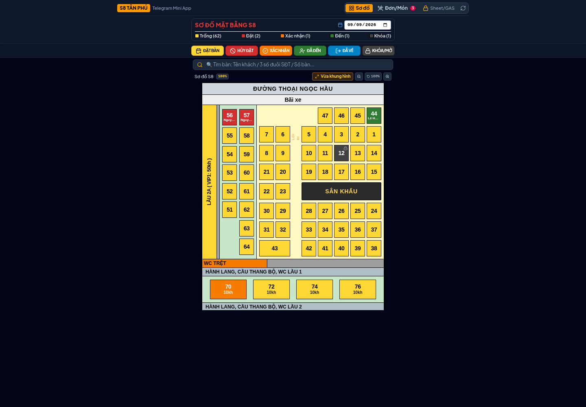
Thông tin quan trọng trước khi dùng
Kết quả kiểm tra: build và TypeScript đạt; 20/20 kịch bản giao diện đạt; không ghi nhận lỗi JavaScript làm gián đoạn thao tác.
Phạm vi kiểm tra: các thao tác ghi dữ liệu được thực hiện trong phiên trình duyệt cô lập bằng Offline Persistence & Local Engine. Dữ liệu kiểm thử không được gửi tới Google Sheet thật.
Trước khi vận hành thật: quản trị viên phải nhập URL Google Apps Script Web App thật trong tab Sheet/GAS, nhấn Lưu URL rồi Kiểm tra. Việc tích hợp với Sheet thật chưa thể nghiệm thu khi chưa có URL triển khai và quyền truy cập thực tế.
Lưu ý nhỏ: trình duyệt yêu cầu /favicon.ico nhưng server trả về 404. Việc này chỉ làm thiếu biểu tượng tab, không ảnh hưởng chức năng.
Mục lục
1. Khởi động nhanh
2. Làm quen với sơ đồ bàn
3. Tìm kiếm và xem chi tiết
4. Tạo đơn đặt bàn
5. Quản lý đơn và trạng thái
6. Quản lý thực đơn
7. Dời, nối và chỉnh sửa bàn
8. Khóa/mở bàn và kết thúc phục vụ
9. Kết nối Google Sheets/GAS
10. Sử dụng trên điện thoại
11. Xử lý sự cố
12. Biên bản kiểm thử
Vai trò người dùng
Vai trò
Công việc chính
Lưu ý
Lễ tân/điều phối
Tìm bàn, đặt bàn, xác nhận, ghi nhận khách đến/về, đổi bàn.
Luôn kiểm tra đúng ngày đang xem.
Phục vụ/bếp
Xem đơn, thêm/sửa số lượng món, nhập ghi chú bếp, xem phiếu dời bàn.
Kiểm tra mã đơn và số bàn trước khi lưu.
Quản trị viên
Cấu hình GAS, kiểm tra kết nối, reset dữ liệu mẫu.
Tab Sheet/GAS có mật khẩu bảo vệ.
1. Khởi động nhanh
1.1 Truy cập ứng dụng
1
Mở URL do quản trị viên cung cấp hoặc mở Mini App từ Telegram.
2
Chờ dòng tiêu đề SƠ ĐỒ MẶT BẰNG S8 và các ô bàn xuất hiện.
3
Kiểm tra ô ngày ở góc phải. Chọn đúng ngày cần xem trước khi thao tác.
4
Nếu dữ liệu chưa mới, nhấn biểu tượng làm mới cạnh tab Sheet/GAS.
1.2 Ba khu vực chính
Khu vực
Mục đích
Sơ đồ
Xem trực quan toàn bộ bàn; đặt, hủy, xác nhận, ghi nhận đến/về và khóa bàn.
Đơn/Món
Tìm và sửa đơn, chuyển trạng thái, quản lý món đã đặt.
Sheet/GAS
Cấu hình backend Google Apps Script, kiểm tra dữ liệu và xem hướng dẫn Code.gs.
Hình 1 — Màn hình chính gồm tab điều hướng, ngày xem, chú giải màu, thanh thao tác, tìm kiếm và sơ đồ vật lý.
2. Làm quen với sơ đồ bàn
2.1 Ý nghĩa màu trạng thái
Màu
Trạng thái
Có thể thao tác
Vàng
Trống
Đặt bàn hoặc khóa bàn.
Đỏ
Đã đặt
Xác nhận, ghi nhận đã đến, hủy, xem/sửa đơn, dời/nối bàn.
Cam
Đã xác nhận
Ghi nhận đã đến, hủy, xem/sửa đơn, dời/nối bàn.
Xanh lá
Đã đến
Đã về, hủy, xem/sửa đơn, dời/nối bàn.
Xám đậm
Khóa/không hoạt động
Chỉ mở khóa; không thể đặt bàn.
2.2 Đọc sơ đồ
Khu vực Xanh: nhóm bàn sân vườn 51–64.
Khu vực Trệt: các dãy bàn chính, sân khấu, lối đi và khu vệ sinh.
VIP lầu 1: các phòng VIP70, VIP72, VIP74, VIP76.
Lầu 2A/VIP1 và Lầu 2B/VIP2: khu vực lớn cho nhóm đông/sự kiện.
2.3 Thu phóng
Vừa khung hình: tự cân sơ đồ theo màn hình hiện tại.
Nút −/+: thu nhỏ/phóng to.
Nút phần trăm: trở về kích thước chuẩn 100%.
Khi một chế độ thao tác đang bật, các bàn không hợp lệ sẽ bị làm mờ và không bấm được. Đây là cơ chế ngăn thao tác sai trạng thái.
3. Tìm kiếm và xem chi tiết
3.1 Tìm nhanh
1
Chạm ô Tìm bàn phía trên sơ đồ.
2
Nhập một trong các giá trị: tên khách, 3 số cuối điện thoại, mã đơn hoặc số bàn.
3
Chọn kết quả khách để mở chi tiết đơn; chọn kết quả bàn để làm nổi bật vị trí trên sơ đồ.
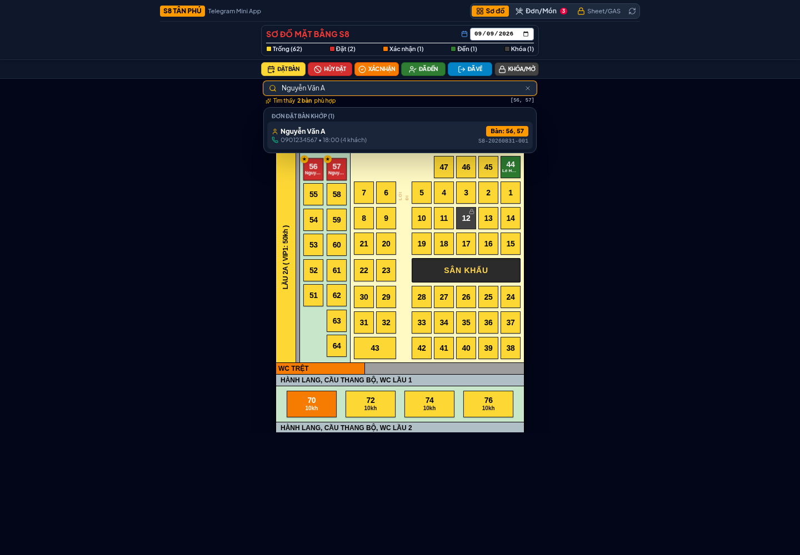
Hình 2 — Ví dụ tìm theo tên khách. Kết quả hiển thị số điện thoại, giờ, số khách, nhóm bàn và mã đơn.
3.2 Xem chi tiết bàn
Khi không bật chế độ thao tác nào, chạm trực tiếp vào một bàn để mở thông tin chi tiết. Với bàn đã có khách, màn hình cho biết đại diện khách, điện thoại, số khách, tiền cọc, ghi chú, món đặt trước và các thao tác dời/nối bàn.
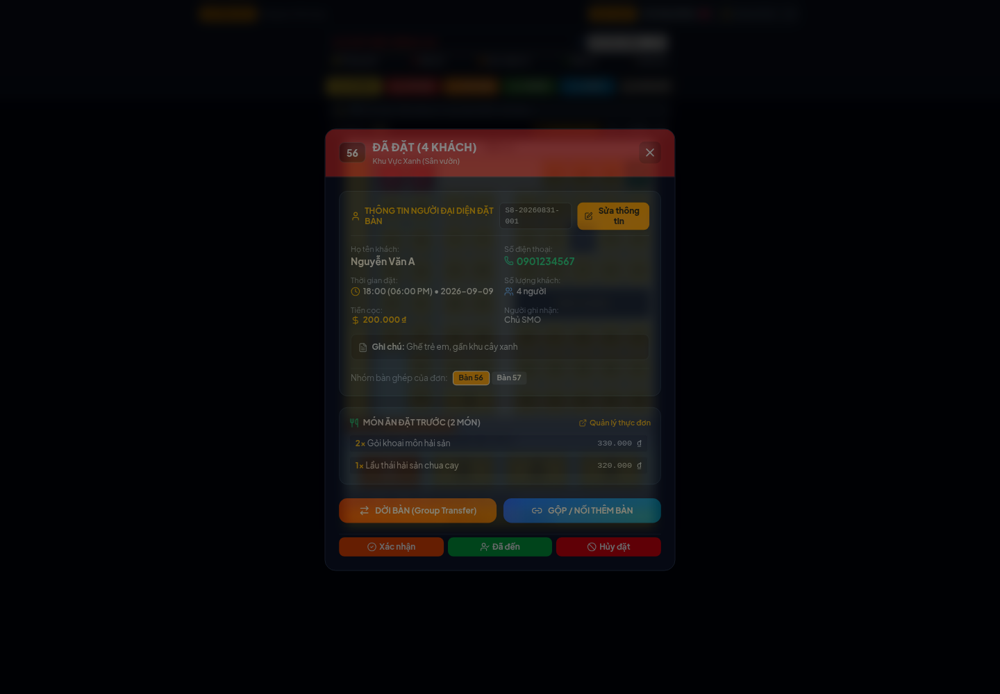
Hình 3 — Chi tiết bàn đã đặt. Đối chiếu tên khách, mã đơn và số bàn trước khi đổi trạng thái.
4. Tạo đơn đặt bàn
4.1 Chọn bàn
1
Tại tab Sơ đồ, nhấn ĐẶT BÀN.
2
Chạm một hoặc nhiều bàn màu vàng. Bàn được chọn có viền đỏ và dấu kiểm.
3
Kiểm tra danh sách bàn ở thanh dưới cùng rồi nhấn TIẾP TỤC ĐẶT BÀN.
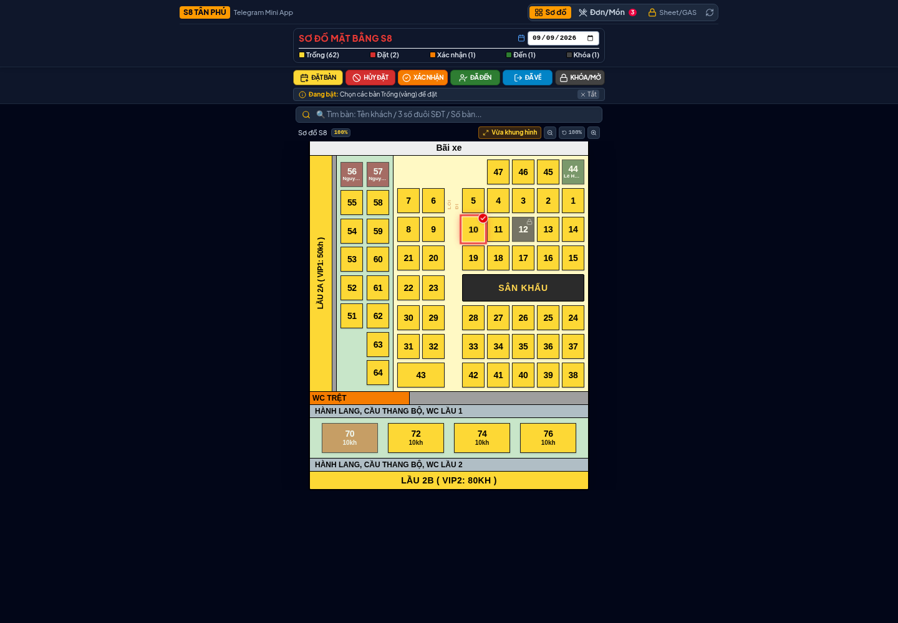
Hình 4 — Chọn bàn trống. Có thể nhấn “Bỏ chọn” để làm lại trước khi tiếp tục.
4.2 Điền thông tin đơn
Trường
Yêu cầu
Ví dụ/Lưu ý
Tên khách hàng
Bắt buộc
Nhập tên dễ nhận diện.
Số điện thoại
Bắt buộc, 10 số
Ví dụ: 0901234567.
Ngày/giờ đặt
Bắt buộc
Có các nút giờ nhanh cho ca trưa và ca tối.
Số lượng khách
Tối thiểu 1
Dùng nút −/+ hoặc nhập trực tiếp.
Tiền cọc
Không bắt buộc
Có mức nhanh 0, 100.000, 200.000, 500.000, 1.000.000 đồng.
Ghi chú
Khuyến nghị
Ghế trẻ em, ăn chay, sinh nhật, gần sân khấu...
Người nhập
Tự điền
Lấy từ Telegram nếu có; vẫn có thể chỉnh.
Kiểm tra kỹ ngày, giờ, bàn và số điện thoại trước khi lưu. Form sẽ chặn nếu thiếu tên/điện thoại hoặc điện thoại không đủ định dạng 10 số.
4. Tạo đơn đặt bàn (tiếp)
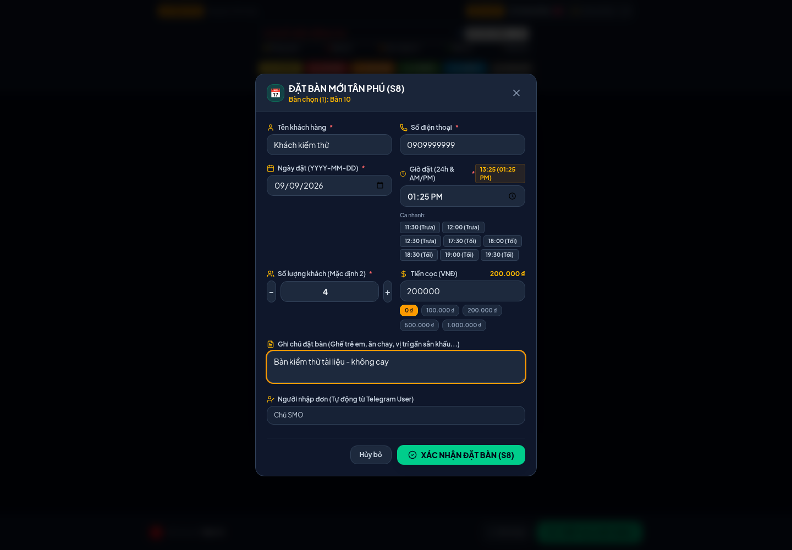
Hình 5 — Form đã điền. Nhấn “XÁC NHẬN ĐẶT BÀN (S8)” để lưu.
4.3 Sau khi lưu
Ứng dụng báo Đặt bàn thành công.
Bàn chuyển từ vàng sang đỏ và hiển thị tên khách.
Đơn xuất hiện trong tab Đơn/Món.
Nếu đã kết nối GAS thật, ứng dụng gửi dữ liệu về backend; nếu chưa, dữ liệu được lưu trong Local Engine của trình duyệt.
4.4 Cách khác để đặt một bàn
Tắt mọi chế độ thao tác.
Chạm bàn màu vàng.
Trong hộp chi tiết bàn trống, chọn ĐẶT BÀN NÀY NGAY.
Điền và xác nhận form như trên.
5. Quản lý đơn và trạng thái
5.1 Tìm và lọc đơn
Mở tab Đơn/Món. Có thể tìm theo tên, điện thoại, mã đơn hoặc bàn; lọc theo tất cả/hôm nay/ngày cụ thể; và lọc trạng thái.
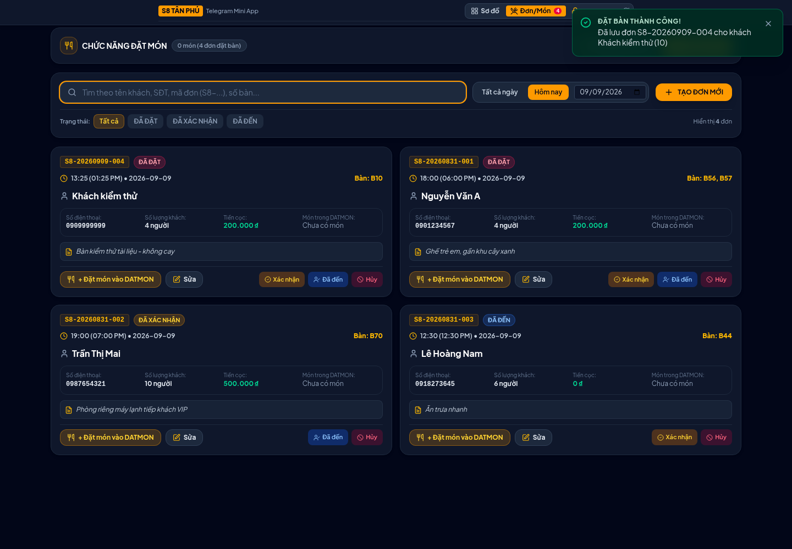
Hình 6 — Mỗi thẻ đơn có mã đơn, trạng thái, thời gian, bàn, khách, cọc, số món, ghi chú và nhóm nút thao tác.
5.2 Chuyển trạng thái đúng quy trình
Tình huống
Thao tác
Kết quả
Khách xác nhận sẽ đến
Nhấn Xác nhận
Đơn/bàn chuyển sang cam.
Khách có mặt
Nhấn Đã đến
Đơn/bàn chuyển sang xanh lá.
Khách không dùng đơn
Nhấn Hủy
Đơn bị loại khỏi danh sách hoạt động; bàn được giải phóng.
Khách ăn xong và rời đi
Từ sơ đồ/chi tiết, nhấn Đã về
Bàn trở lại trạng thái trống.
Không nhầm Hủy và Đã về: “Hủy” dành cho đơn không tiếp tục; “Đã về” chỉ dùng khi khách đang ở trạng thái Đã đến và đã kết thúc phục vụ.
6. Quản lý thực đơn
6.1 Mở chi tiết món
Mở tab Đơn/Món.
Tìm đúng đơn và nhấn Xem món hoặc + Đặt món vào DATMON.
Kiểm tra mã đơn, khách, bàn và tổng tiền ở đầu trang.
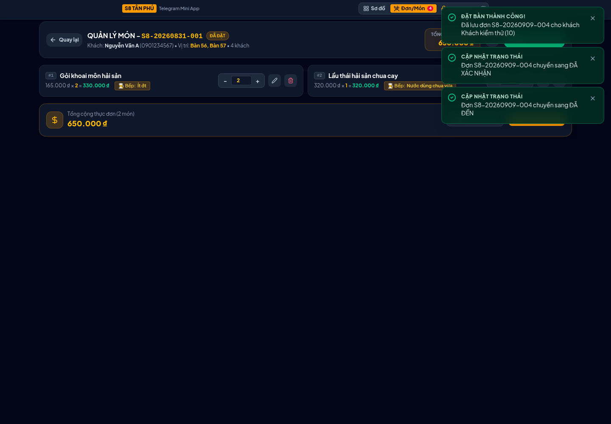
Hình 7 — Trang quản lý món. Có thể tăng/giảm số lượng, nhập số lượng chính xác, sửa hoặc xóa mềm món.
6.2 Sửa món hiện có
Nhấn −/+ để giảm/tăng một phần.
Nhập trực tiếp số lượng và nhấn Enter hoặc chạm ra ngoài để lưu.
Nhấn biểu tượng sửa để đổi tên, số lượng hoặc ghi chú.
Nhấn biểu tượng thùng rác, kiểm tra lại tên món rồi xác nhận. Đây là xóa mềm; dữ liệu được chuyển trạng thái thay vì mất hoàn toàn.
6. Quản lý thực đơn (tiếp)
6.3 Thêm món mới
1
Nhấn + THÊM MÓN.
2
Tìm theo tên món hoặc chọn danh mục. Món đang tạm ngưng bị làm mờ và không thể chọn.
3
Dùng +, +5, +10 hoặc nhập trực tiếp số lượng.
4
Nhập ghi chú bếp hoặc chọn thẻ nhanh như “Không cay”, “Ít cay”, “Chín kỹ”, “Không hành”, “Nấu trước”.
5
Đối chiếu tổng số món và tổng tiền ở thanh dưới rồi nhấn XÁC NHẬN THÊM MÓN.
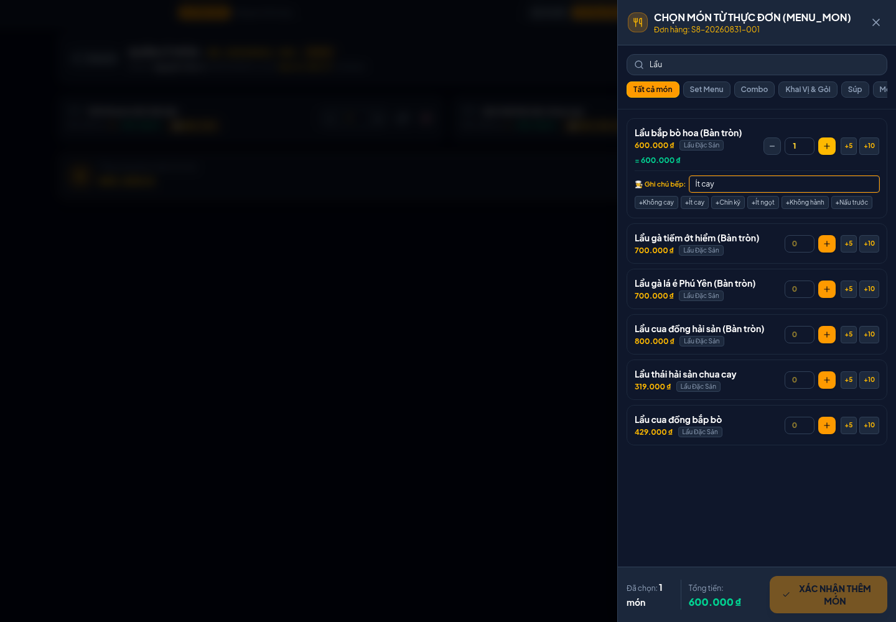
Hình 8 — Ngăn chọn món. Ví dụ đã chọn 1 phần lẩu và nhập ghi chú “Ít cay”.
Nếu đặt nhiều phần, ưu tiên nhập trực tiếp hoặc nút +5/+10; luôn kiểm tra tổng tiền trước khi xác nhận.
7. Dời, nối và chỉnh sửa bàn
Dời toàn bộ nhóm bàn
Tắt chế độ thao tác và chạm một bàn của đơn.
Chọn DỜI BÀN (Group Transfer).
Kiểm tra nhóm bàn nguồn được nhận diện tự động.
Chọn một hoặc nhiều bàn đích màu vàng.
Nhấn XÁC NHẬN DỜI.
Kiểm tra phiếu báo Bếp/Bar; có thể in phiếu.
Toàn bộ bàn nguồn được giải phóng; thực đơn đi theo đơn sang nhóm bàn mới.
Gộp/nối thêm bàn
Mở chi tiết một bàn của đơn.
Chọn GỘP / NỐI THÊM BÀN.
Kiểm tra nhóm bàn hiện tại.
Chọn các bàn trống cần nối.
Nhấn XÁC NHẬN NỐI BÀN.
Bàn cũ vẫn giữ nguyên; bàn nối thêm nhận cùng trạng thái và cùng đơn.
7.1 Sửa thông tin khách và đổi bàn
Trong tab Đơn/Món, nhấn Sửa trên thẻ đơn; hoặc chọn Sửa thông tin từ chi tiết bàn.
Chỉnh tên, số điện thoại, ngày/giờ, số khách, cọc, trạng thái hoặc ghi chú.
Tại phần bàn gán, giữ/bỏ bàn hiện tại và chọn thêm bàn trống.
Kiểm tra phải còn ít nhất một bàn, sau đó nhấn LƯU THAY ĐỔI.
Quy tắc nhóm bàn: khi một đơn gắn nhiều bàn, thao tác trạng thái từ một bàn có thể tự chọn toàn bộ nhóm để giữ dữ liệu nhất quán.
8. Khóa/mở bàn và kết thúc phục vụ
8.1 Khóa hoặc mở khóa
Nhấn KHÓA/MỞ trên thanh thao tác.
Chọn bàn trống để khóa hoặc bàn xám để mở khóa.
Kiểm tra thanh dưới cùng và xác nhận.
8.2 Ghi nhận khách đã về
Chỉ chọn bàn đang xanh lá/Đã đến.
Nhấn ĐÃ VỀ, chọn bàn/nhóm bàn rồi xác nhận.
Kiểm tra bàn trở lại màu vàng.
9. Kết nối Google Sheets/GAS
9.1 Mở khóa trang cấu hình
Nhấn tab Sheet/GAS.
Nhập mật khẩu cấu hình: smo_vungmanh.
Nhấn MỞ KHÓA TRUY CẬP.
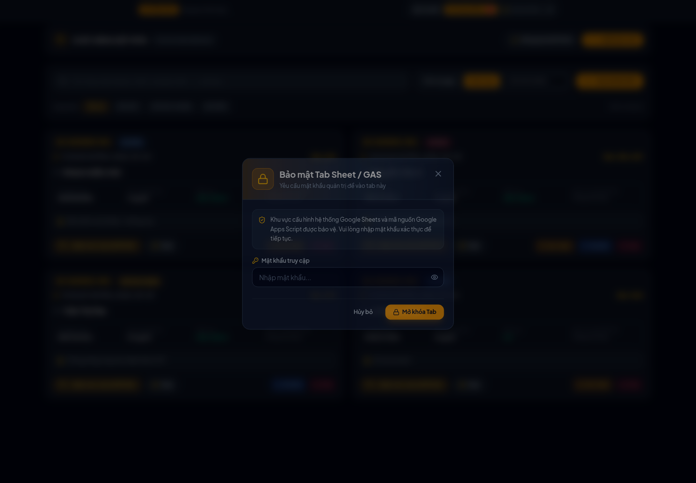
Hình 9 — Hộp xác thực bảo vệ trang cấu hình. Dùng biểu tượng con mắt nếu cần kiểm tra ký tự vừa nhập.
Bảo mật: mật khẩu hiện được đặt trực tiếp trong mã phía trình duyệt nên chỉ là lớp ngăn thao tác nhầm, không phải cơ chế bảo mật cấp máy chủ. Không công khai URL cấu hình và nên bổ sung xác thực phía backend khi đưa lên Internet.
9. Kết nối Google Sheets/GAS (tiếp)
9.2 Lưu URL Web App
1
Dán URL có dạng https://script.google.com/macros/s/.../exec vào ô URL.
2
Nhấn Lưu URL.
3
Nhấn Kiểm tra. Kết quả phải đọc được sơ đồ bàn, số đơn DATBAN và số dòng món DATMON.
4
Nếu dữ liệu từ n8n không lên đúng, nhấn Soi luồng n8n để xem ngày thô, bàn thô và kết quả chuẩn hóa.
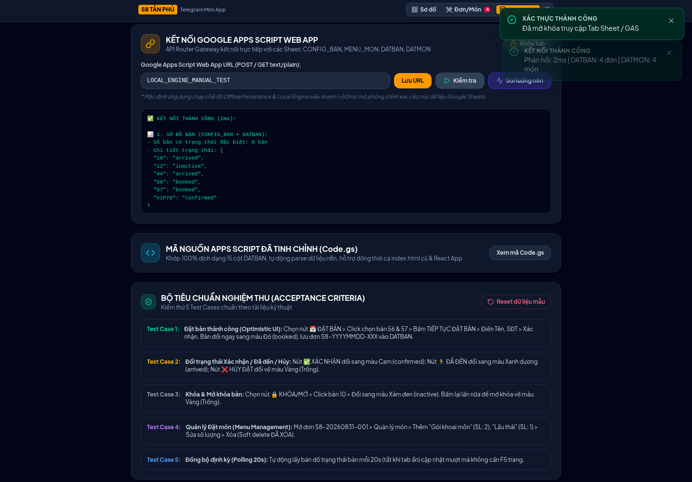
Hình 10 — Kết quả kiểm tra thành công trong Local Engine. Khi dùng GAS thật, cần đối chiếu số bàn/đơn/món với Google Sheet.
9.3 Triển khai Code.gs
Mở Google Sheet → Extensions → Apps Script.
Tại trang Sheet/GAS trong ứng dụng, mở phần Xem mã Code.gs và sao chép mã.
Dán vào Apps Script, lưu và triển khai dạng Web app.
Cấp quyền truy cập phù hợp với mô hình vận hành.
Sao chép URL /exec mới và lưu vào ứng dụng.
Nút Reset dữ liệu mẫu phục hồi Local Engine. Không dùng nút này như một thao tác xử lý dữ liệu sản xuất trên Google Sheet.
10. Sử dụng trên điện thoại
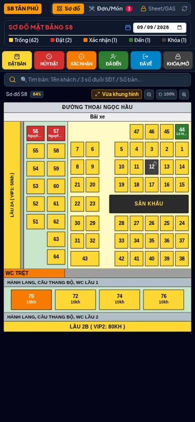
Hình 11 — Giao diện ở kích thước 390×844. Sơ đồ vừa chiều ngang và không phát sinh tràn ngang.
Mẹo thao tác nhanh
Dùng Vừa khung hình để nhìn toàn bộ sơ đồ.
Chạm chính giữa ô bàn; bàn hợp lệ sẽ hiện viền/dấu kiểm.
Khi thanh xác nhận xuất hiện ở dưới, cuộn đến vùng cần thiết nhưng không đổi tab trước khi xác nhận.
Trong drawer chọn món, cuộn danh sách ở giữa; thanh tổng tiền luôn nằm phía dưới.
Nếu bàn quá nhỏ, phóng to bằng nút + rồi thu lại sau khi chọn.
Quy trình khuyến nghị cho lễ tân
Chọn đúng ngày.
Tìm khách trước để tránh tạo trùng.
Chọn bàn trống → nhập đủ tên, điện thoại, giờ và số khách.
Đọc lại tên khách và bàn trước khi xác nhận.
Khi khách gọi lại, chuyển Xác nhận; khi đến, chuyển Đã đến.
Khi kết thúc, dùng Đã về để giải phóng bàn.
11. Xử lý sự cố
Hiện tượng
Nguyên nhân thường gặp
Cách xử lý
Không thấy đơn vừa tạo
Đang xem sai ngày hoặc bộ lọc chưa đúng.
Chọn đúng ngày, xóa từ khóa, chọn Tất cả trạng thái, nhấn đồng bộ.
Không chọn được bàn
Bàn không phù hợp chế độ đang bật.
Tắt chế độ, kiểm tra màu bàn rồi bật đúng thao tác.
Không dùng được Đã về
Bàn chưa ở trạng thái Đã đến.
Chuyển đơn sang Đã đến trước.
Không thêm được món
Chưa chọn số lượng hoặc món đang tạm ngưng.
Chọn món hoạt động, đặt số lượng ≥ 1.
Kiểm tra GAS không đúng số liệu
URL sai/cũ, Web App chưa cấp quyền, dữ liệu sai tab/cột.
Triển khai lại, dùng URL /exec mới, kiểm tra quyền, chạy Soi luồng n8n.
Dữ liệu chỉ có trên máy đang dùng
Ứng dụng vẫn ở Local Engine.
Nhập URL GAS thật và kiểm tra lại kết nối.
Thiếu biểu tượng tab
/favicon.ico trả về 404.
Không ảnh hưởng chức năng; thêm favicon khi hoàn thiện triển khai.
Giao diện chưa cập nhật
Dữ liệu cache/chưa đồng bộ.
Nhấn nút làm mới; kiểm tra mạng và trạng thái GAS.
Thông tin cần gửi khi báo lỗi
Ngày/giờ xảy ra lỗi và ngày đang chọn trên ứng dụng.
Mã đơn, tên khách, số bàn và thao tác vừa thực hiện.
Ảnh chụp toàn màn hình kèm thông báo lỗi.
Kết quả nút Kiểm tra hoặc Soi luồng n8n nếu liên quan dữ liệu.
12. Biên bản kiểm thử giao diện
Ngày thực hiện: 08/09/2026 • Trình duyệt: Google Chrome headless • Dữ liệu: Local Engine trong context cô lập.
Mã
Kịch bản
Kết quả xác nhận
Trạng thái
MT-01
Mở ứng dụng
Hiển thị sơ đồ, điều hướng và chú giải.
PASS
MT-02
Trạng thái mẫu
Đặt/Xác nhận/Đến/Khóa hiển thị đúng.
PASS
MT-03
Tìm theo tên khách
Đúng khách và nhóm bàn 56, 57.
PASS
MT-04
Chi tiết bàn đã đặt
Đúng khách, điện thoại và đơn.
PASS
MT-05
Chọn bàn trống
Bàn 10 được chọn; thanh xác nhận xuất hiện.
PASS
MT-06
Trường bắt buộc
Chặn form thiếu tên/điện thoại.
PASS
MT-07
Điện thoại sai
Chặn số không đúng định dạng 10 số.
PASS
MT-08
Tạo đơn
Đơn tạo thành công; bàn 10 chuyển Đã đặt.
PASS
MT-09
Tra cứu đơn
Tìm thấy đúng đơn vừa tạo.
PASS
MT-10
Xác nhận đơn
Trạng thái đơn/bàn cập nhật đồng bộ.
PASS
MT-11
Khách đã đến
Đơn chuyển Đã đến thành công.
PASS
MT-12
Xem thực đơn
Đúng món, số lượng, ghi chú, tổng tiền.
PASS
MT-13
Tăng số lượng món
Tăng từ 2 lên 3.
PASS
MT-14
Chọn món/ghi chú
Nút xác nhận bật sau khi chọn.
PASS
MT-15
Thêm món
Món và ghi chú lưu vào Local Engine.
PASS
MT-16
Mật khẩu GAS sai
Trang cấu hình vẫn bị khóa.
PASS
MT-17
Mật khẩu GAS đúng
Mở được trang cấu hình.
PASS
MT-18
Kiểm tra Local Engine
Đọc được bàn, DATBAN và DATMON.
PASS
MT-19
Màn hình điện thoại
Không tràn ngang ở 390×844.
PASS
MT-20
Lỗi JavaScript
Không ghi nhận pageerror.
PASS
Kết luận: các luồng giao diện và Local Engine đủ điều kiện sử dụng thử. Trước khi đưa vào vận hành sản xuất, cần chạy thêm kiểm thử tích hợp với URL GAS thật và dữ liệu Google Sheet thật.
Kiểm thử tích hợp cần thực hiện khi có GAS thật
Tạo một đơn thử và xác nhận có dòng mới đúng 15 cột trong DATBAN.
Thêm/sửa/xóa mềm món và đối chiếu DATMON.
Dời/nối nhóm bàn và kiểm tra trạng thái từng bàn sau đồng bộ.
Thử hai thiết bị đồng thời để xác nhận polling và nhất quán dữ liệu.
Kiểm tra quyền Web App, thời gian phản hồi và xử lý khi mất mạng.
Tệp kết quả chi tiết: docs/manual-test-results.json • Ảnh gốc: docs/screenshots/ • Script tái kiểm thử: scripts/manual-test.mjs.